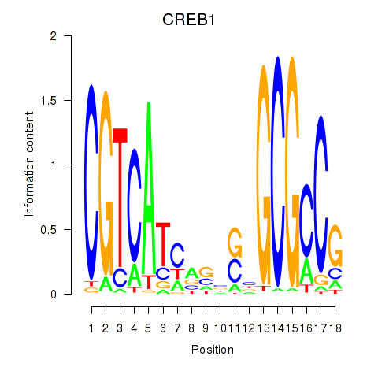

Motif ID: CREB1
Z-value: 0.561
Transcription factors associated with CREB1:
| Gene Symbol | Entrez ID | Gene Name |
|---|---|---|
| CREB1 | ENSG00000118260.10 | CREB1 |
![](http://string-db.org/api/image/network?network_flavor=evidence&limit=0&species=9606&caller_identity=MARA&identifiers=9606.ENSP00000373648%0D9606.ENSP00000454870%0D9606.ENSP00000237822%0D9606.ENSP00000470652%0D9606.ENSP00000457230%0D9606.ENSP00000416250%0D9606.ENSP00000259708%0D9606.ENSP00000296785%0D9606.ENSP00000229390%0D9606.ENSP00000351769%0D9606.ENSP00000023939%0D9606.ENSP00000262554%0D9606.ENSP00000262394%0D9606.ENSP00000424757%0D9606.ENSP00000341171%0D9606.ENSP00000450281%0D9606.ENSP00000381148%0D9606.ENSP00000384182%0D9606.ENSP00000454836%0D9606.ENSP00000410041%0D9606.ENSP00000262320%0D9606.ENSP00000405455%0D9606.ENSP00000222388%0D9606.ENSP00000305810%0D9606.ENSP00000390783%0D9606.ENSP00000356898%0D9606.ENSP00000362166%0D9606.ENSP00000338034%0D9606.ENSP00000446872%0D9606.ENSP00000343313%0D9606.ENSP00000393854%0D9606.ENSP00000269127%0D9606.ENSP00000251108%0D9606.ENSP00000356211%0D9606.ENSP00000281081%0D9606.ENSP00000371101%0D9606.ENSP00000319597%0D9606.ENSP00000358548%0D9606.ENSP00000380251%0D9606.ENSP00000377640%0D9606.ENSP00000326817%0D9606.ENSP00000216807%0D9606.ENSP00000364578%0D9606.ENSP00000364219%0D9606.ENSP00000380495%0D9606.ENSP00000454699%0D9606.ENSP00000334437%0D9606.ENSP00000347839%0D9606.ENSP00000396052%0D9606.ENSP00000328671%0D9606.ENSP00000376822%0D9606.ENSP00000314193%0D9606.ENSP00000260443%0D9606.ENSP00000441000%0D9606.ENSP00000351416%0D9606.ENSP00000314619%0D9606.ENSP00000309163%0D9606.ENSP00000364482%0D9606.ENSP00000300896%0D9606.ENSP00000356541%0D9606.ENSP00000253099%0D9606.ENSP00000268711%0D9606.ENSP00000175756%0D9606.ENSP00000374529%0D9606.ENSP00000302836%0D9606.ENSP00000370671%0D9606.ENSP00000358400%0D9606.ENSP00000379051%0D9606.ENSP00000452854%0D9606.ENSP00000351575%0D9606.ENSP00000352678%0D9606.ENSP00000346437%0D9606.ENSP00000374387%0D9606.ENSP00000363036%0D9606.ENSP00000354633%0D9606.ENSP00000364543%0D9606.ENSP00000256637%0D9606.ENSP00000265564%0D9606.ENSP00000364813%0D9606.ENSP00000262577%0D9606.ENSP00000352956%0D9606.ENSP00000348775%0D9606.ENSP00000251241%0D9606.ENSP00000262013%0D9606.ENSP00000358814%0D9606.ENSP00000246041%0D9606.ENSP00000312262%0D9606.ENSP00000296792%0D9606.ENSP00000421380%0D9606.ENSP00000391227%0D9606.ENSP00000339145%0D9606.ENSP00000260372%0D9606.ENSP00000329213%0D9606.ENSP00000431822%0D9606.ENSP00000288071%0D9606.ENSP00000328854%0D9606.ENSP00000235310%0D9606.ENSP00000313350%0D9606.ENSP00000377934%0D9606.ENSP00000265963%0D9606.ENSP00000227520)
{kind=link}
{kind=link}
{kind=link}
{kind=link}
{kind=link}
Top targets:
Gene overrepresentation in biological_process category:
| Log-likelihood per target | Total log-likelihood | Term | Description |
|---|---|---|---|
| 0.1 | 0.4 | GO:0080120 | CAAX-box protein processing(GO:0071586) CAAX-box protein maturation(GO:0080120) |
| 0.1 | 0.2 | GO:0006667 | sphinganine metabolic process(GO:0006667) |
| 0.1 | 0.6 | GO:0010793 | regulation of mRNA export from nucleus(GO:0010793) |
| 0.1 | 0.2 | GO:0016237 | lysosomal microautophagy(GO:0016237) piecemeal microautophagy of nucleus(GO:0034727) suppression by virus of host autophagy(GO:0039521) |
| 0.1 | 0.2 | GO:0048320 | axial mesoderm formation(GO:0048320) |
| 0.0 | 0.1 | GO:0043137 | DNA replication, removal of RNA primer(GO:0043137) |
| 0.0 | 0.2 | GO:0075044 | autophagy of host cells involved in interaction with symbiont(GO:0075044) autophagy involved in symbiotic interaction(GO:0075071) negative regulation of histone H4-K16 acetylation(GO:2000619) |
| 0.0 | 0.1 | GO:0070898 | RNA polymerase III transcriptional preinitiation complex assembly(GO:0070898) |
| 0.0 | 0.2 | GO:0090070 | positive regulation of ribosome biogenesis(GO:0090070) positive regulation of rRNA processing(GO:2000234) |
| 0.0 | 0.2 | GO:0000957 | mitochondrial RNA catabolic process(GO:0000957) regulation of mitochondrial RNA catabolic process(GO:0000960) |
| 0.0 | 0.1 | GO:0035022 | positive regulation of Rac protein signal transduction(GO:0035022) |
| 0.0 | 0.1 | GO:0046166 | xylulose metabolic process(GO:0005997) glyceraldehyde-3-phosphate biosynthetic process(GO:0046166) |
| 0.0 | 0.1 | GO:0034473 | U1 snRNA 3'-end processing(GO:0034473) U5 snRNA 3'-end processing(GO:0034476) nuclear polyadenylation-dependent mRNA catabolic process(GO:0071042) polyadenylation-dependent mRNA catabolic process(GO:0071047) |
| 0.0 | 0.1 | GO:0070681 | glutaminyl-tRNAGln biosynthesis via transamidation(GO:0070681) |
| 0.0 | 0.2 | GO:0002943 | tRNA dihydrouridine synthesis(GO:0002943) |
| 0.0 | 0.1 | GO:0043328 | protein targeting to vacuole involved in ubiquitin-dependent protein catabolic process via the multivesicular body sorting pathway(GO:0043328) |
| 0.0 | 0.2 | GO:0006384 | transcription initiation from RNA polymerase III promoter(GO:0006384) |
| 0.0 | 0.1 | GO:2000048 | negative regulation of cell-cell adhesion mediated by cadherin(GO:2000048) |
| 0.0 | 0.1 | GO:0070105 | positive regulation of interleukin-6-mediated signaling pathway(GO:0070105) |
| 0.0 | 0.1 | GO:0006438 | valyl-tRNA aminoacylation(GO:0006438) |
| 0.0 | 0.0 | GO:0072498 | embryonic skeletal joint development(GO:0072498) |
| 0.0 | 0.1 | GO:1902626 | assembly of large subunit precursor of preribosome(GO:1902626) |
| 0.0 | 0.1 | GO:0044828 | negative regulation by host of viral genome replication(GO:0044828) |
| 0.0 | 0.1 | GO:0043983 | histone H4-K12 acetylation(GO:0043983) |
| 0.0 | 0.2 | GO:0051005 | negative regulation of lipoprotein lipase activity(GO:0051005) |
| 0.0 | 0.1 | GO:0048698 | negative regulation of collateral sprouting in absence of injury(GO:0048698) |
| 0.0 | 0.1 | GO:0061034 | olfactory bulb mitral cell layer development(GO:0061034) |
| 0.0 | 0.1 | GO:1900245 | positive regulation of MDA-5 signaling pathway(GO:1900245) |
| 0.0 | 0.4 | GO:0071243 | cellular response to arsenic-containing substance(GO:0071243) |
| 0.0 | 0.1 | GO:0098706 | ferric iron import into cell(GO:0097461) ferric iron import across plasma membrane(GO:0098706) |
| 0.0 | 0.1 | GO:0006272 | leading strand elongation(GO:0006272) |
| 0.0 | 0.1 | GO:0090074 | negative regulation of protein homodimerization activity(GO:0090074) |
| 0.0 | 0.0 | GO:0009138 | pyrimidine nucleoside diphosphate metabolic process(GO:0009138) |
| 0.0 | 0.1 | GO:1902969 | mitotic DNA replication(GO:1902969) |
| 0.0 | 0.1 | GO:0034427 | nuclear-transcribed mRNA catabolic process, exonucleolytic, 3'-5'(GO:0034427) |
| 0.0 | 0.1 | GO:0042797 | tRNA transcription(GO:0009304) 5S class rRNA transcription from RNA polymerase III type 1 promoter(GO:0042791) tRNA transcription from RNA polymerase III promoter(GO:0042797) |
| 0.0 | 0.0 | GO:1903348 | positive regulation of bicellular tight junction assembly(GO:1903348) |
| 0.0 | 0.1 | GO:0033353 | S-adenosylmethionine cycle(GO:0033353) |
| 0.0 | 0.0 | GO:0036451 | cap mRNA methylation(GO:0036451) |
| 0.0 | 0.0 | GO:0045829 | negative regulation of isotype switching(GO:0045829) |
Gene overrepresentation in cellular_component category:
| Log-likelihood per target | Total log-likelihood | Term | Description |
|---|---|---|---|
| 0.1 | 0.2 | GO:0030689 | Noc complex(GO:0030689) |
| 0.0 | 0.3 | GO:0035339 | SPOTS complex(GO:0035339) |
| 0.0 | 0.2 | GO:0032021 | NELF complex(GO:0032021) |
| 0.0 | 0.2 | GO:1990726 | Lsm1-7-Pat1 complex(GO:1990726) |
| 0.0 | 0.1 | GO:0000814 | ESCRT II complex(GO:0000814) |
| 0.0 | 0.2 | GO:0034388 | Pwp2p-containing subcomplex of 90S preribosome(GO:0034388) |
| 0.0 | 0.2 | GO:0034274 | Atg12-Atg5-Atg16 complex(GO:0034274) |
| 0.0 | 0.1 | GO:0002945 | cyclin K-CDK12 complex(GO:0002944) cyclin K-CDK13 complex(GO:0002945) |
| 0.0 | 0.1 | GO:0000126 | transcription factor TFIIIB complex(GO:0000126) |
| 0.0 | 0.2 | GO:1990393 | 3M complex(GO:1990393) |
| 0.0 | 0.1 | GO:0031084 | BLOC-2 complex(GO:0031084) |
| 0.0 | 0.1 | GO:0016035 | zeta DNA polymerase complex(GO:0016035) |
| 0.0 | 0.1 | GO:0030956 | glutamyl-tRNA(Gln) amidotransferase complex(GO:0030956) |
| 0.0 | 0.1 | GO:0055087 | Ski complex(GO:0055087) |
| 0.0 | 0.1 | GO:0043224 | nuclear SCF ubiquitin ligase complex(GO:0043224) |
| 0.0 | 0.5 | GO:0005847 | mRNA cleavage and polyadenylation specificity factor complex(GO:0005847) |
| 0.0 | 0.3 | GO:0043190 | ATP-binding cassette (ABC) transporter complex(GO:0043190) |
| 0.0 | 0.2 | GO:0000439 | core TFIIH complex(GO:0000439) |
| 0.0 | 0.3 | GO:0000177 | cytoplasmic exosome (RNase complex)(GO:0000177) |
| 0.0 | 0.1 | GO:0005851 | eukaryotic translation initiation factor 2B complex(GO:0005851) |
| 0.0 | 0.2 | GO:0070652 | HAUS complex(GO:0070652) |
| 0.0 | 0.0 | GO:0075341 | host cell PML body(GO:0075341) |
Gene overrepresentation in molecular_function category:
| Log-likelihood per target | Total log-likelihood | Term | Description |
|---|---|---|---|
| 0.1 | 0.2 | GO:0019779 | Atg12 activating enzyme activity(GO:0019778) Atg8 activating enzyme activity(GO:0019779) |
| 0.0 | 0.2 | GO:0019776 | Atg8 ligase activity(GO:0019776) |
| 0.0 | 0.1 | GO:0008427 | calcium-dependent protein kinase inhibitor activity(GO:0008427) |
| 0.0 | 0.1 | GO:0001156 | TFIIIC-class transcription factor binding(GO:0001156) |
| 0.0 | 0.2 | GO:0010465 | nerve growth factor receptor activity(GO:0010465) |
| 0.0 | 0.1 | GO:0016423 | tRNA (guanine) methyltransferase activity(GO:0016423) |
| 0.0 | 0.1 | GO:0034353 | RNA pyrophosphohydrolase activity(GO:0034353) |
| 0.0 | 0.1 | GO:0004802 | transketolase activity(GO:0004802) |
| 0.0 | 0.2 | GO:0004758 | serine C-palmitoyltransferase activity(GO:0004758) C-palmitoyltransferase activity(GO:0016454) |
| 0.0 | 0.1 | GO:0050567 | glutaminyl-tRNA synthase (glutamine-hydrolyzing) activity(GO:0050567) |
| 0.0 | 0.1 | GO:0034602 | oxoglutarate dehydrogenase (NAD+) activity(GO:0034602) |
| 0.0 | 0.2 | GO:0017150 | tRNA dihydrouridine synthase activity(GO:0017150) |
| 0.0 | 0.1 | GO:0016402 | pristanoyl-CoA oxidase activity(GO:0016402) |
| 0.0 | 0.1 | GO:0004832 | valine-tRNA ligase activity(GO:0004832) |
| 0.0 | 0.1 | GO:0004523 | RNA-DNA hybrid ribonuclease activity(GO:0004523) |
| 0.0 | 0.1 | GO:0052851 | cupric reductase activity(GO:0008823) ferric-chelate reductase (NADPH) activity(GO:0052851) |
| 0.0 | 0.1 | GO:0030144 | alpha-1,6-mannosylglycoprotein 6-beta-N-acetylglucosaminyltransferase activity(GO:0030144) |
| 0.0 | 0.1 | GO:0016300 | tRNA (uracil) methyltransferase activity(GO:0016300) |
| 0.0 | 0.0 | GO:0030366 | molybdopterin synthase activity(GO:0030366) |
| 0.0 | 0.2 | GO:0017070 | U6 snRNA binding(GO:0017070) |
| 0.0 | 0.1 | GO:0016802 | adenosylhomocysteinase activity(GO:0004013) trialkylsulfonium hydrolase activity(GO:0016802) |
| 0.0 | 0.0 | GO:0009041 | uridylate kinase activity(GO:0009041) |
| 0.0 | 0.3 | GO:0008432 | JUN kinase binding(GO:0008432) |
| 0.0 | 0.1 | GO:1990050 | phosphatidic acid transporter activity(GO:1990050) |
| 0.0 | 0.0 | GO:0004127 | cytidylate kinase activity(GO:0004127) |
| 0.0 | 0.0 | GO:0016429 | tRNA (adenine) methyltransferase activity(GO:0016426) tRNA (adenine-N1-)-methyltransferase activity(GO:0016429) |
| 0.0 | 0.0 | GO:0004483 | mRNA (nucleoside-2'-O-)-methyltransferase activity(GO:0004483) |
Gene overrepresentation in C2:CP category:
| Log-likelihood per target | Total log-likelihood | Term | Description |
|---|---|---|---|
| 0.0 | 0.3 | PID_TCR_RAS_PATHWAY | Ras signaling in the CD4+ TCR pathway |
Gene overrepresentation in C2:CP:REACTOME category:
| Log-likelihood per target | Total log-likelihood | Term | Description |
|---|---|---|---|
| 0.0 | 0.3 | REACTOME_RAF_MAP_KINASE_CASCADE | Genes involved in RAF/MAP kinase cascade |
| 0.0 | 0.2 | REACTOME_MRNA_DECAY_BY_5_TO_3_EXORIBONUCLEASE | Genes involved in mRNA Decay by 5' to 3' Exoribonuclease |